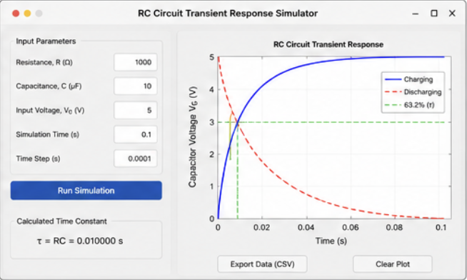
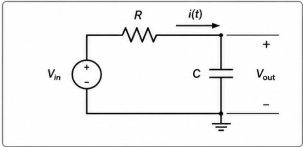
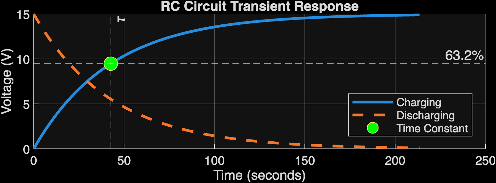

Time Constant
τ = RCThe time constant determines how quickly the capacitor charges or discharges.
Model and visualize capacitor charging and discharging behavior in a first-order RC circuit. Calculate the time constant, analyze transient response, and export data for engineering analysis.

The time constant determines how quickly the capacitor charges or discharges.
Capacitor voltage rises exponentially toward the input voltage.
Capacitor voltage decays exponentially toward zero.
Simulation data can be exported for Excel or MATLAB analysis.

VC(t) = V0(1 − e−t/RC)
VC(t) = V0e−t/RC
τ = RC
Interactive App Designer interface for running simulations and visualizing results.
● RC time constant calculated
● Charging and discharging curves generated
● 63.2% voltage marker at t = τ
● Data exported to CSV for analysis

The charging curve approaches the supply voltage while the discharging curve returns toward zero. The time constant marks the first-order response speed.
1 tau = R * C;
2 t = 0:dt:t_end;
3
4 Vc_charge = V0 * (1 - exp(-t / tau));
5 Vc_discharge = V0 * exp(-t / tau);
6 plot(t, Vc_charge, 'b', t, Vc_discharge, 'r--');
7 yline(0.632*V0, 'g--', '63.2% (τ)');→ Add interactive sliders for real-time parameter adjustment
→ Implement frequency response analysis and Bode plots
→ Develop a Simulink model for system-level simulation
→ Automate report generation with figures and tables
→ Support multiple capacitor configurations and topologies